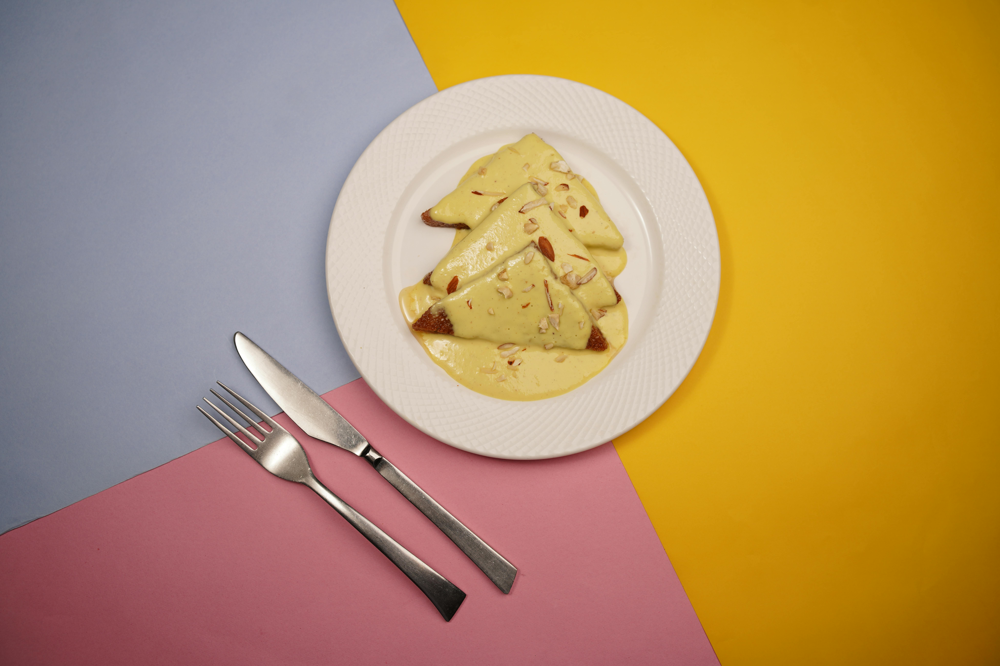

Shahi tukda is a light sweet dish prepared with bread slices and milk, it is very well known in India and Pakistan.
It is extremely quick and simple to make with few ingredients. It will sure make a special place in your heart once you try it.